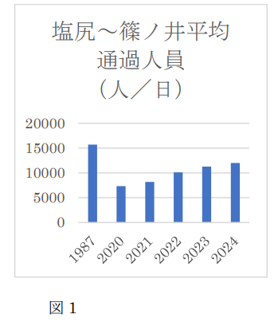

篠ノ井線新聞
篠ノ井線沿線で乗客数が減少 地域活性化の取り組みが急務 [cite: 14]

図1: 塩尻〜篠ノ井間 平均通過人員の推移 [cite: 36]
出典: JR東日本［路線別ご利用状況］
https://www.jreast.co.jp/rosen_avr/pdf/rosen02.pdf
近年、篠ノ井線沿線では通勤・通学での鉄道利用者数が徐々に減少しています [cite: 15]。人口減少や自家用車の利用増加が背景にあるとみられ、沿線自治体や事業者は活性化策を急いでいます [cite: 15]。
1987年には15,000人以上だった平均通過人員は減少傾向にありますが、地域の特色を活かした持続可能な鉄道利用の推進が求められています [cite: 31, 34]。
運営ピン留め
この記事はコメント可能です。投稿された内容は以下に公開されます。
💬 コメントを投稿する
創刊号へのご意見をお待ちしております！